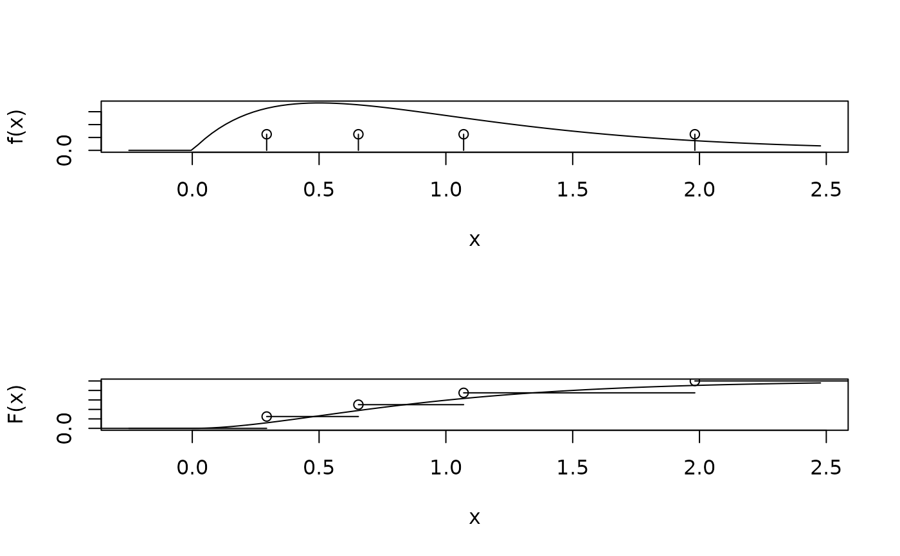

discrete.gamma internally used for the likelihood computations in
pml or optim.pml. It is useful to understand how it works
for simulation studies or in cases where .
Usage
discrete.gamma(alpha, k)
discrete.beta(shape1, shape2, k)
plot_gamma_plus_inv(shape = 1, inv = 0, k = 4, discrete = TRUE,
cdf = TRUE, append = FALSE, xlab = "x", ylab = ifelse(cdf, "F(x)",
"f(x)"), xlim = NULL, verticals = FALSE, edge.length = NULL,
site.rate = "gamma", ...)
plotRates(obj, cdf.color = "blue", main = "cdf", ...)Arguments
- alpha
Shape parameter of the gamma distribution.
- k
Number of intervals of the discrete gamma distribution.
- shape1, shape2
non-negative parameters of the Beta distribution.
- shape
Shape parameter of the gamma distribution.
- inv
Proportion of invariable sites.
- discrete
logical whether to plot discrete (default) or continuous pdf or cdf.
- cdf
logical whether to plot the cumulative distribution function or density / probability function.
- append
logical; if TRUE only add to an existing plot.
- xlab
a label for the x axis, defaults to a description of x.
- ylab
a label for the y axis, defaults to a description of y.
- xlim
the x limits of the plot.
- verticals
logical; if TRUE, draw vertical lines at steps.
- edge.length
Total edge length (sum of all edges in a tree).
- site.rate
Indicates what type of gamma distribution to use. Options are "gamma" (Yang 1994) and "gamma_quadrature" using Laguerre quadrature approach of Felsenstein (2001)
- ...
Further arguments passed to or from other methods.
- obj
an object of class pml
- cdf.color
color of the cdf.
- main
a main title for the plot.
Details
These functions are exported to be used in different packages so far only in
the package coalescentMCMC, but are not intended for end user. Most of the
functions call C code and are far less forgiving if the import is not what
they expect than pml.
Author
Klaus Schliep klaus.schliep@gmail.com
Examples
discrete.gamma(1, 4)
#> [1] 0.1369538 0.4767519 1.0000000 2.3862944
old.par <- par(no.readonly = TRUE)
par(mfrow = c(2,1))
plot_gamma_plus_inv(shape=2, discrete = FALSE, cdf=FALSE)
plot_gamma_plus_inv(shape=2, append = TRUE, cdf=FALSE)
plot_gamma_plus_inv(shape=2, discrete = FALSE)
plot_gamma_plus_inv(shape=2, append = TRUE)

par(old.par)